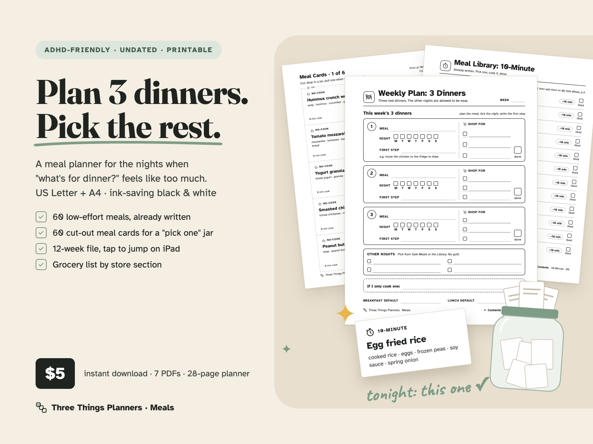
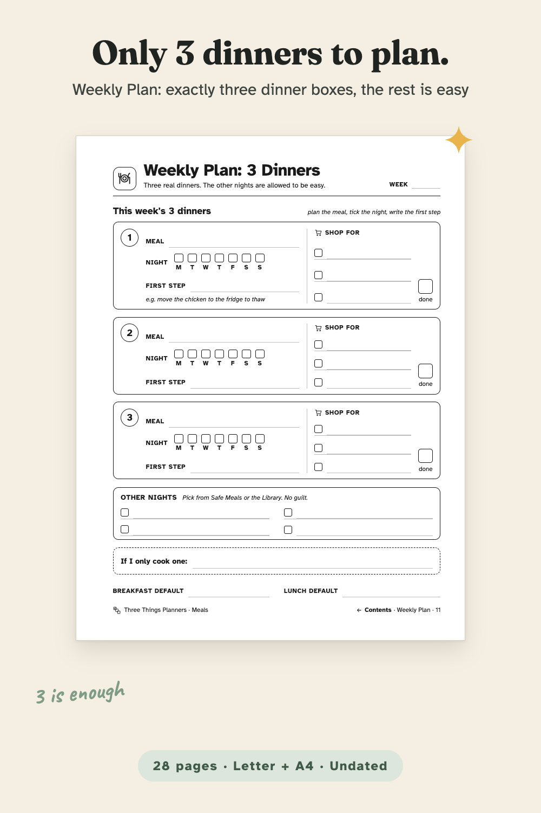
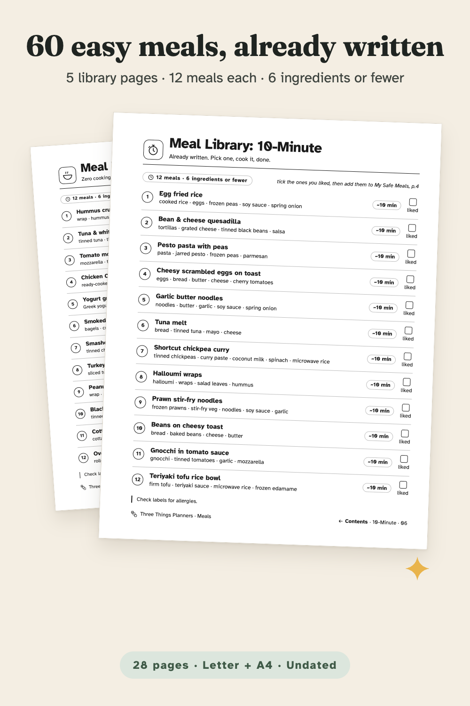
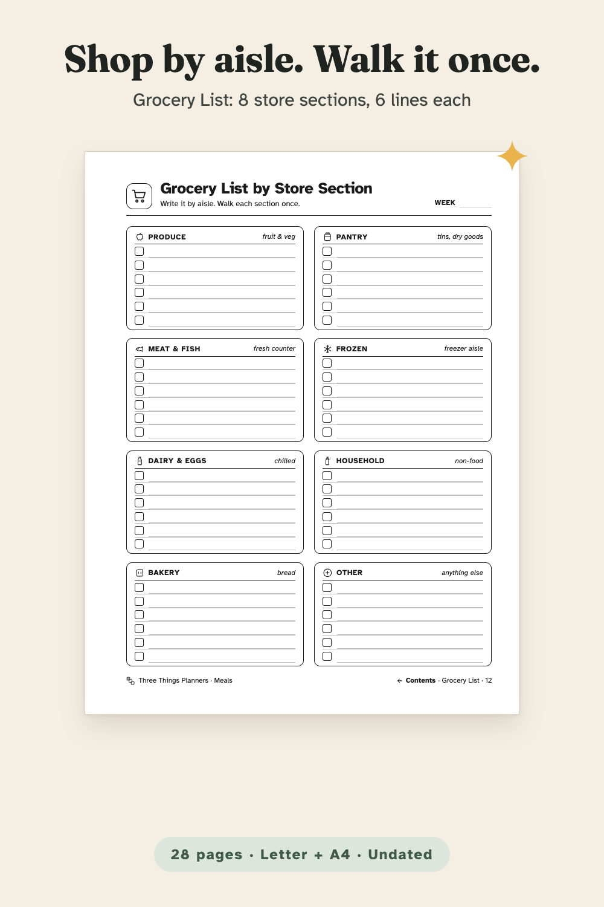
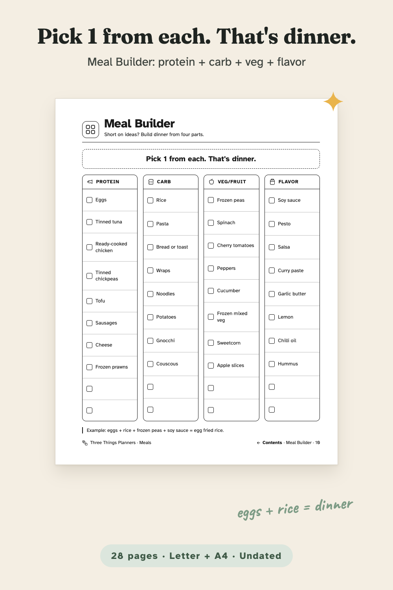
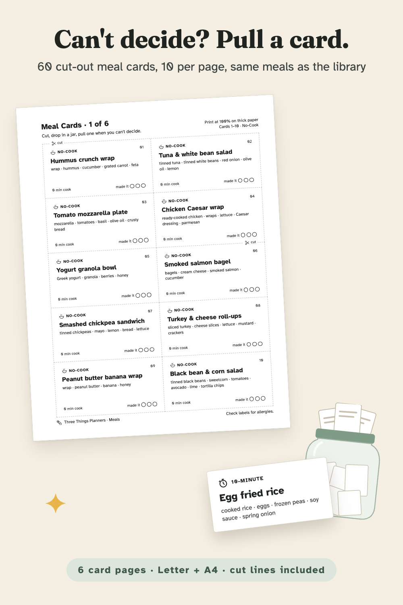
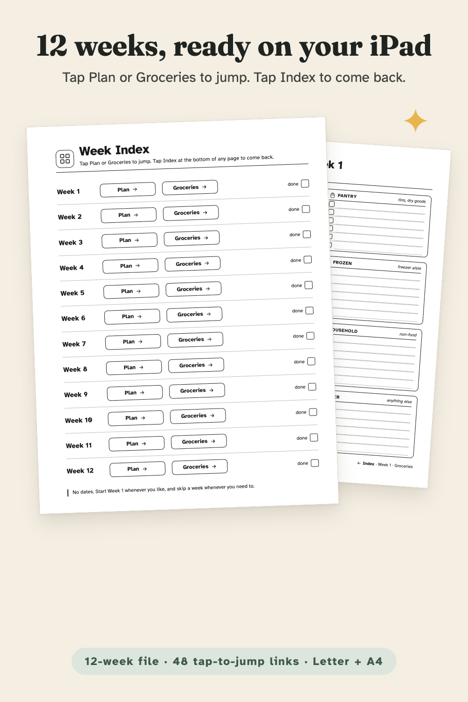
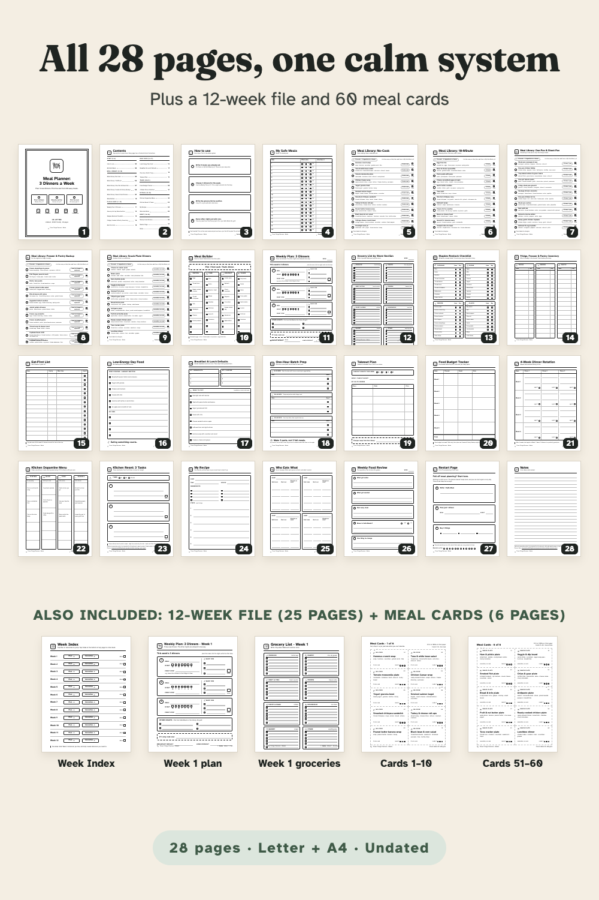

Plan 3 real dinners, pick the rest from 60 low-effort meals. An undated, ink-saving meal planner with 60 meals already written, a 12-week tap-to-jump file and 60 cut-out meal cards.
From Three Things Planners, the planner imprint of Hustle Studio. New shop, no reviews yet.

$5.00 USD, one-time payment, instant download. No subscription.
Buy now: $5 one-time Not sure yet? Get 3 real pages free (PDF, no email)Satisfaction guarantee: if it doesn't help you plan dinner, you get your money back. 14-day full refund, no questions asked.
🔒 Secure checkout: Waffo Pancake is our merchant of record. It takes the payment (major cards accepted), handles tax and sends your receipt; we never see your card details.
14-day refund, no questions asked. If the planner doesn't help you plan dinner, email chenphien@gmail.com (Three Things Planners support) within 14 days of purchase with your order email for a full refund. We aim to reply within 2 business days, and the refund goes back to your original payment method through Waffo Pancake (see Terms). Yes, the support address is a Gmail inbox: we're a small studio and a real person reads it. Your payment, receipt and refund are processed by Waffo Pancake, not by that inbox.
Try before you buy: the free 3-page sample (PDF) has three real pages: Weekly Plan: 3 Dinners, Meal Library: No-Cook (all 12 meals) and the Grocery List by Store Section, US Letter. No email needed. You can also look through it right on this page.
A new shop, honestly. We're new and have no reviews yet, and we won't invent any. Here is the idea instead: planning every meal of the week is a lot of decisions, so this planner asks for only three dinners. The other nights come from a list that's already written.
Every image below is rendered from the real PDF pages. No buyer photos or reviews yet: the shop is new, and we won't invent any. The free sample lets you print three real pages before you pay.







The actual free-sample PDF. If it doesn't show on your device, download the free sample here.
The real pages in a phone-size browser viewer: Week Index → Week 1 plan → Index → Week 1 groceries, then Contents → Weekly Plan → Contents → Meal Library: 10-Minute. It is not recorded inside GoodNotes itself.
"What's for dinner?" can be the hardest question of the day. This planner gives you a smaller one: plan three real dinners a week, and on every other night pick something that's already written down. No 21-meal plan, and no guilt about easy nights.
The Meal Library has 60 low-effort meals in plain English, 12 per page, each with 6 common ingredients or fewer and a time tag ("0 min cook", "~10 min", "~25 min, 1 pan", "from the freezer or cupboard", "assemble, no cook"). Tick the ones you liked and move them to My Safe Meals. Short on ideas? The Meal Builder lists 8 proteins, 8 carbs, 8 veg/fruit and 8 flavors: pick 1 from each.
Around that core, one job per page: Staples Restock Checklist (40 basics), Fridge, Freezer & Pantry Inventory, Eat-First List, Low-Energy Day Food, Breakfast & Lunch Defaults, One-Hour Batch Prep, Takeout Plan, Food Budget Tracker, 4-Week Dinner Rotation, Kitchen Dopamine Menu, Kitchen Reset: 3 Tasks, My Recipe, Who Eats What (up to 4 people), Weekly Food Review, a Restart Page and lined Notes.
On an iPad: import the planner into GoodNotes or Notability and tap any line on the Contents page to jump; every page has a Contents link at the bottom (52 internal links per planner file). The 12-week file has a tappable Week Index (48 internal links per file).
On paper: print at 100%. The left margin is about 20 mm wide for a hole punch. Print the meal cards on thicker paper and cut on the dashed lines.
Check labels for allergies; this is a planning tool, not nutrition advice. ADHD-friendly by design, and not medical advice.
One ZIP download, ADHD-Meal-Planner_All-Files.zip, with 7 PDFs. Each file is also listed for direct download after payment.
ADHD-Meal-Planner_Letter.pdf 28 pages, US Letter 8.5 × 11 in ADHD-Meal-Planner_A4.pdf 28 pages, A4 210 × 297 mm 3-Dinners_12-Weeks_Letter.pdf 25 pages: Week Index + Week 1–12 3-Dinners_12-Weeks_A4.pdf 25 pages: Week Index + Week 1–12 Meal-Cards_Letter.pdf 6 pages: 60 meal cards Meal-Cards_A4.pdf 6 pages: 60 meal cards README.pdf 2 pages: print settings, iPad import, license
The 28 planner pages: 1 Cover · 2 Contents · 3 How to use · 4 My Safe Meals · 5 Meal Library: No-Cook · 6 Meal Library: 10-Minute · 7 Meal Library: One-Pan & Sheet-Pan · 8 Meal Library: Freezer & Pantry Backup · 9 Meal Library: Snack-Plate Dinners · 10 Meal Builder · 11 Weekly Plan: 3 Dinners · 12 Grocery List by Store Section · 13 Staples Restock Checklist · 14 Fridge, Freezer & Pantry Inventory · 15 Eat-First List · 16 Low-Energy Day Food · 17 Breakfast & Lunch Defaults · 18 One-Hour Batch Prep · 19 Takeout Plan · 20 Food Budget Tracker · 21 4-Week Dinner Rotation · 22 Kitchen Dopamine Menu · 23 Kitchen Reset: 3 Tasks · 24 My Recipe · 25 Who Eats What · 26 Weekly Food Review · 27 Restart Page · 28 Notes
Is this a physical product?
No. It's an instant digital download: 7 PDFs in one ZIP. Print at home or use them in a note-taking app.
Which size should I print?
US Letter in the US and Canada, A4 in the UK, Australia, Europe and elsewhere. Both are included and each is laid out for its own paper. Print at "Actual size / 100%".
Do the links work in GoodNotes and Notability?
Yes, they are standard PDF internal links: tap a line on Contents (planner) or Plan / Groceries on the Week Index (12-week file), and tap Contents or Index at the bottom of a page to go back. In GoodNotes, links respond in read-only mode.
Are the meals right for my allergies or eating plan?
The 60 meals are everyday ideas with common ingredients, not tailored to any allergy or eating plan. Check labels for allergies and swap anything you can't eat. This is a planning tool, not nutrition advice.
What if it doesn't work for me?
Email chenphien@gmail.com within 14 days of purchase for a full refund, no questions asked. We're a new shop with no reviews yet, which is why there's a free 3-page sample to try first.
Pages 23 and 28 print web addresses of two other Three Things Planners products. They are separate and optional; this meal planner is complete without them.
$5.00 USD, one-time payment, instant download
Buy now: $5 one-time Not sure yet? Get 3 real pages free (PDF, no email)🔒 Secure checkout by Waffo Pancake, our merchant of record: it handles payment and tax, and we never see your card details. Satisfaction guarantee: if it doesn't help you plan dinner, you get your money back. 14-day refund, no questions asked: email chenphien@gmail.com, refunded to your original payment method.